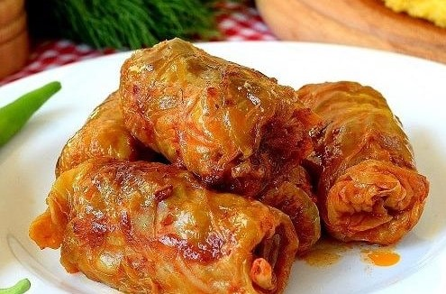

Rumænien er et sydøsteuropærisk land kendt for den skovklædte region Transsylvanien, omkranset af Karpaterne. Hovedstaden er Bukarest. Rumæniens befolkning er cirka 19 millioner sammenlignet med Danmark, hvor befolkningen kun er 6 millioner. Det officielle sprog er rumænsk (90%), men der er nogle mindretal, der taler ungarsk, tysk, fransk, engelsk, græsk og slavisk. Valutaen er rumænsk leu. Karpaterne passerer gennem 7 lande, men 51% er i Rumænien.
Rumænien har fire veldefinerede årstider: forår, sommer, efterår og vinter. Kold, snedækket vinter og varm, solrig sommer. Rumænien er et stort land med en kystregion ved Sortehavet, Donaudeltaet og bjerge. Derfor varierer klimaet afhængigt af regionen. Rumænien har et tempereret-kontinentalt klima af en overgangstype, specifik for Centraleuropa. Gennemsnitstemperaturen er
| Vinter: – 3°C | Forår: 11°C | Sommer: 23°C | Efterår: 12°C |
|---|
Vi har mange kirker, fordi størstedelen af befolkningen er religiøse. Vi lægger stor vægt på fejringen af jul. Rumænien er et meget religiøst land. Kristendommen er den største tro, hvor omkring 80 % af befolkningen identificerer sig som rumænsk-ortodokse kristne, 6 % identificerer sig som protestantiske kristne og 5 % identificerer sig som romersk-katolikker.
Rumænien er afgrænset af Ukraine mod nord, Moldova mod nordøst, Sortehavet mod sydøst, Bulgarien mod syd, Serbien mod sydvest og Ungarn mod vest.
Med sine 2.544 m er Moldoveanu top den højeste i Rumænien. Det er beliggende i Fagaras-bjergene i de sydlige Karpater.
Punktet i Rumænien er Sortehavet eller 'Black Sea' på 0 meter havoverfladen. Sortehavet ligger mellem Europa og Asien.

Omkring 90% af landets befolkning er etnisk rumænske. Der er også mange etniske ungarere, som hovedsageligt bor i Transsylvanien, i det nordvestlige område af landet. En lille procentdel af rumænske borgere identificerer sig selv som romaer (sigøjnere), og etniske tyskere udgør en endnu mindre del af befolkningen.
Regeringen er demokratisk. Rumænien har været medlem af EU siden 2007 og blev medlem af Den Nordatlantiske Traktatorganisation (NATO) i 2004.
Transsylvanien er kendt for legenderne om vampyrer. Legenden om Dracula, gav inspiration til mange film.
| Nul stjerner: Roadtrip i Transsylvanien | Hotel transylvania udkast |
|---|
| Nak & Æd: En vagtel i Rumænien | Top Gear i Rumænien |
|---|
| 1. Nul stjerner: Roadtrip i Transsylvanien |
|---|
| 2. Hotel transylvania udkast |
| 3. Nak & Æd: En vagtel i Rumænien |
| 4. Top Gear i Rumænien |
Rumæniens nationaldrik, hedder Tuica eller Palinca. Folk drikker det før et måltid for at bringe appetit. I Danmark findes en lignende drik, der hedder Snaps.
Ungarsk traditionel mad er Gulyas. Rumænsk traditionel mad er Sarmale (fyldte kålruller = Stuffed cabbage rolls).
Min by hedder Udvarhely. Byen har en befolkning på omkring 34 tusind. Befolkningen 95% er ungarere. Byens befolkning er som Fredericia eller Køge i Danmark. Vi har mange fritidsaktiviteter i byen som svømmestadion, skøjteløb, dans, bowling og gokart. Når jeg er hjemme er min yndlingsaktivitet at hænge ud med venner og besøge bare og klubber.